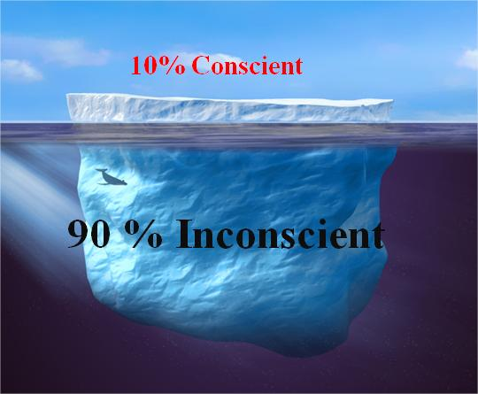

<!DOCTYPE html><html lang="en"><head></head><title>INDIVIDU’elle</title><meta name="description" content="Magaly Stauffer homéopathie et yoga"><meta name="keywords" content="Magaly Stauffer"><link rel="stylesheet" href="css/style.css" media="screen"></html><body><div class="nav"><a href="/" data-ajax="false"><div class="title">INDIVIDU’elle</div><div class="subTitle">homéopathie et yoga</div></a><div class="menu"><li><a href="homeopathie.html" data-ajax="false">Homéopathie </a></li><li><a href="metakinebiologie.html" data-ajax="false">Métakinébiologie  </a></li><li><a href="yoga.html" data-ajax="false">Yoga</a></li><li><a href="index.html#infos" data-ajax="false">Infos</a></li></div><div class="copyright">INDIVIDU’elle © 2017</div></div><div class="container"><div class="image"><div class="parallax-window" data-parallax="scroll" data-image-src="img/photos/mkb.jpg" data-over-scroll-fix="true" data-natural-height="425" data-natural-width="640"></div></div><div class="parallax-text" style="margin-top:-86px"><div class="parallax-title">METAKINEBIOLOGIE©</div><div class="parallax-sub-title">Fondée par Philippe Bertholon</div></div><section><p>Tous les conflits, traumatismes, croyances personnelles ou familiales.... marquent notre cerveau. Une grande partie de ces influences se retrouve stockée dans l'inconscient, et peut influencer nos comportements, notre équilibre psycho-émotionnel, nous causer des situations relationnelles ou des schémas répétitifs difficiles et stressants, des sabotages, des blocages, des parasitages, etc... Sur le plan physique, cela peut engendrer des somatisations: des douleurs, des maladies, des symptômes et des troubles de santé qui s'évertuent à nous communiquer le dysfonctionnement.</p><p>Les recherches récentes ont permises de mettre en lumière que des événements marquants (stress psycho-émotionnels, ) vécus personnellement ou hérités de notre famille , peuvent influencer notre épi génétique (<a class="link" href="https://www.rts.ch/play/tv/redirect/detail/3745896">environnement de l&#39;ADN</a>)</p><p>Lors de la consultation j'utilise le <a class="link" href="http://www.pages-sante-bien-etre.fr/discipline/fiche/kinesiologue">test neuromusculaire de la kinésiologie</a> pour avoir accès, avec une extrême rapidité, aux mémoires conscientes, subconscientes, inconscientes, cellulaires et holographiques du corps. Trouver les blocages dans les mémoires conscientes et inconscientes, liés à un stress qui peut être à l'origine du dysfonctionnement. il va de soi que ce travail se fait avec le consultant et non pas sur celui-ci et que les mémoires qui ne sont pas prêtes a être traitées resteront inaccessibles.</p><p>La métakinébiologie permet de libérer les stress émotionnels profonds à travers la prise de conscience et le ressenti des personnes.</p><p>Cette méthode peut s'adresser à tous, dans le cas de douleurs physiques, psychiques ou émotionnelles. Elle permet le rééquilibrage du système psycho-cérébro-organique.</p><p>Elle s'adresse autant aux adultes qu'aux enfants. Pour les petits (0-7 ans) je travaille en transfert sur le parent avec l'accord de l'enfant bien entendu.</p><p>Les mots clés de cette approche : SENS - COHERENCE - CONFIANCE. on peut aussi faire référence au site  <a class="link" href="http://www.kinebio.com">www.kinebio.com</a></p><h3>SAVK OU EMDR </h3><p>C’est une technique facile et efficace pour accompagner dans différentes situations de traumatismes émotionnel, de choc, d accouchement mal digéré, de phobies, de peurs, de TOC...</p><p>Chaque événement douloureux laisse une marque dans le cerveau ainsi que le ressenti associé à l’événement. Cette méthode, basée sur le mouvement oculaire de va et vient, permet de  dissocier le ressenti du vécu et ainsi  de se libérer des effets secondaires du stress ressenti.  En conséquent, l information traumatique libérée de sa charge émotionnelle, n a plus le même impact sur  le cerveau  et le retour a l état d équilibre se fait. Les effets sont durables.</p><h3>Consultation</h3><p>150 CHF la consultation</p><p>Durée 1h3O</p><a href="index.html#infos"><div class="reserve">Réserver une séance</div></a></section></div></body><script src="js/jquery.min.js"></script><script src="js/parallax.min.js"></script><script>jQuery(window).trigger('resize').trigger('scroll');


  // Disable scroll zooming and bind back the click event
var onMapMouseleaveHandler = function (event) {
var that = $(this);

that.on('click', onMapClickHandler);
that.off('mouseleave', onMapMouseleaveHandler);
that.find('iframe').css("pointer-events", "none");
}

var onMapClickHandler = function (event) {
var that = $(this);

// Disable the click handler until the user leaves the map area
that.off('click', onMapClickHandler);

// Enable scrolling zoom
that.find('iframe').css("pointer-events", "auto");

// Handle the mouse leave event
that.on('mouseleave', onMapMouseleaveHandler);
}

// Enable map zooming with mouse scroll when the user clicks the map
$('.map').on('click', onMapClickHandler);</script>